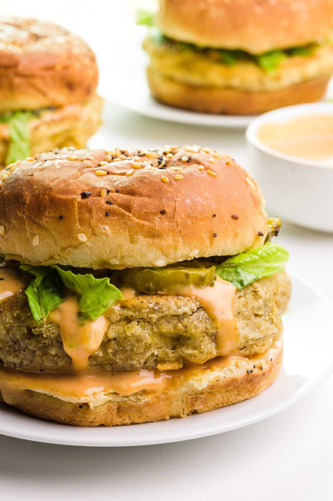

Veggies Sandwish Recipe

Ingredients
- 200g of fresh tofu
- 1 spt of garlic powder
- Salt
- Black pepper
- 1 medium fresh egg
- 2 buns
- Chedder chesee
- Home made mayonese
- Pickles
- Tomatoes cutted in slices/li>
- Crispy lettuce
Directions
Use a bow to blend all the ingredients
- Mash the tofu
- Add the garlic powder
- Salt to tasty
- A pich of black pepper
- A whole egg
- Splite the dough into two parts and modeling as a patty
- At this time, you can deep fried the patties or bake it into the oven pre heat at 180C for 20min
- Cut the buns and warm up on the pan
- Cover the bun's botton with Home made mayonese
- Add the cutted crispy lettuce on the bun
- Over the crispy lettuce add the tofu patty
- add the tomato slice and the pickles
- On the top, cover with the bun's crow
This is the time you will tasty your flavor veggie sandwich